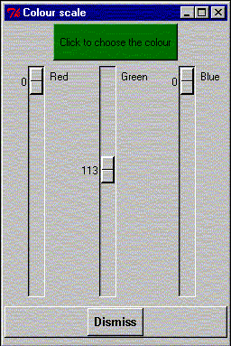

**************************************************************************
Select background colour widget
Leif Laaksonen CSC 1996
**************************************************************************
It's also possible to define the background colour using the gOpenMol own colour editor. Slide the red, green and blue sliders to get the right colour. Press then the button coloured using the selected colour.

Line command: see define command
**************************************************************************
LUL/1996
**************************************************************************